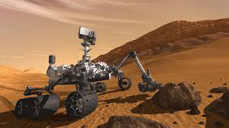

Projects
-

MARS CURIOSITY ROVER
Curiosity is a car-sized rover designed to explore Gale Crater on Mars as part of NASA's Mars Science Laboratory mission (MSL).[3] Curiosity was launched from Cape Canaveral on November 26, 2011, at 15:02 UTC aboard the MSL spacecraft and landed on Aeolis Palus in Gale Crater on Mars on August 6, 2012, 05:17 UTC.[7][8][13] The Bradbury Landing site was less than 2.4 km (1.5 mi) from the center of the rover's touchdown target after a 560 million km (350 million mi) journey.[9][14] The rover's goals include an investigation of the Martian climate and geology; assessment of whether the selected field site inside Gale Crater has ever offered environmental conditions favorable for microbial life, including investigation of the role of water; and planetary habitability studies in preparation for human exploration.[15][16] In December 2012, Curiosity's two-year mission was extended indefinitely.[17] On August 5, 2017, NASA celebrated the fifth anniversary of the Curiosity rover landing and related exploratory accomplishments on the planet Mars.[18][19] The rover is still operational, and as of August 26, 2018, Curiosity has been on Mars for 2152 sols (2211 total days) since landing on August 6, 2012. (See current status.)
Read More -

INTERTERNATIONAL SPACE STATION
International Space Station A rearward view of the International Space Station backdropped by the limb of the Earth. In view are the station's four large, gold-coloured solar array wings, two on either side of the station, mounted to a central truss structure. Further along the truss are six large, white radiators, three next to each pair of arrays. In between the solar arrays and radiators is a cluster of pressurised modules arranged in an elongated T shape, also attached to the truss. A set of blue solar arrays are mounted to the module at the aft end of the cluster. The International Space Station on 23 May 2010 as seen from the departing Space Shuttle Atlantis during STS-132. ISS insignia.svg Station statistics SATCAT no. 25544 Call sign Alpha, Station Crew Fully crewed: 6 Currently aboard: 6 (Expedition 56) Launch 20 November 1998 Launch pad Baikonur 1/5 and 81/23 Kennedy LC-39 Mass ≈ 419,725 kg (925,335 lb)[1] Length 72.8 m (239 ft) Width 108.5 m (356 ft) Height ≈ 20 m (66 ft) nadir–zenith, arrays forward–aft (27 November 2009)[needs update] Pressurised volume 931.57 m3 (32,898 cu ft)[2] (28 May 2016) Atmospheric pressure 101.3 kPa (29.9 inHg; 1.0 atm) Perigee 403 km (250 mi) AMSL[3] Apogee 406 km (252 mi) AMSL[3] Orbital inclination 51.64 degrees[3] Orbital speed 7.67 km/s[3] (27,600 km/h; 17,200 mph) Orbital period 92.49 minutes[3] Orbits per day 15.54[3] Orbit epoch 12 April 2018, 13:09:59 UTC[3] d
Read More
Read More
parker solar probe
Parker Solar Probe (previously Solar Probe, Solar Probe Plus, or Solar Probe+, abbreviated PSP)[8] is a NASA robotic spacecraft en route to probe the outer corona of the Sun.[3][9][6] It will approach to within 8.86 solar radii (6.2 million kilometers or 3.85 million miles)[10] from the photosphere (surface) of the Sun and will travel, at closest approach, as fast as 700,000 km/h (430,000 mph).[10][11] The project was announced in the fiscal 2009 budget year. The cost of the project is US$1.5 billion. Johns Hopkins University Applied Physics Laboratory designed and built the spacecraft,[12] which was launched on August 12, 2018.[2] It became the first NASA spacecraft named after a living person, honoring physicist Eugene Parker, professor emeritus at the University of Chicago.[13] A memory card containing the names of over 1.1 million people was mounted on a plaque and installed below the spacecraft’s high-gain antenna on May 18, 2018.[14] The card also contains photos of Parker and a copy of his 1958 scientific paper predicting important aspects of solar physicsThe Parker Solar Probe concept originates from a predecessor Solar Orbiter project conceived in the 1990s. Similar in design and objectives, the Solar Probe mission served as one of the centerpieces of the eponymous Outer Planet/Solar Probe (OPSP) program formulated by NASA. The first three missions of the program were planned to be: the Solar Orbiter, the Pluto and Kuiper belt reconnaissance mission Pluto Kuiper Express, and the Europa Orbiter astrobiology mission focused on Europa.[15][16] The original Solar Probe design used a gravity assist from Jupiter to enter a polar orbit which dropped almost directly toward the Sun. While this explored the important solar poles and came even closer to the surface (3 R☉, a perihelion of 4 R☉),[16] the extreme variation in solar irradiance made for an expensive mission and required a radioisotope thermal generator for power. The trip to Jupiter also made for a long mission (3 1⁄2 years to first solar perihelion, 8 years to second). Following the appointment of Sean O'Keefe as Administrator of NASA, the entirety of the OPSP program was canceled as part of President George W. Bush's request for the 2003 United States federal budget.[17] Administrator O'Keefe cited a need for a restructuring of NASA and its projects, falling in line with the Bush Administration's wish for NASA to refocus on "research and development, and addressing management shortcomings."[17] The cancellation of the program also resulted in the initial cancellation of New Horizons, the mission that eventually won the competition to replace Pluto Kuiper Express in the former OPSP program.[18] That mission, which would eventually be launched as the first mission of the New Frontiers program, a conceptual successor to the OPSP program, would undergo a lengthy political battle to secure funding for its launch, which occurred in 2006.[19] In the early 2010s, plans for the Solar Probe mission were incorporated into a lower-cost Solar Probe Plus.[20] The redesigned mission uses multiple Venus gravity assists for a more direct flight path, which can be powered by solar panels. It also has a higher perihelion, reducing the demands on the thermal protection system..
Read MoreAbout OSIRIS-REx
The Origins Spectral Interpretation Resource Identification Security - Regolith Explorer spacecraft will travel to a near-Earth asteroid, called Bennu (formerly 1999 RQ36), and bring at least a 2.1-ounce sample back to Earth for study. The mission will help scientists investigate how planets formed and how life began, as well as improve our understanding of asteroids that could impact Earth. OSIRIS-REx is scheduled to launch Sept. 8, 2016, at 7:05 p.m. EDT. As planned, the spacecraft will reach its asteroid target in 2018 and return a sample to Earth in 2023. NASA's Goddard Space Flight Center in Greenbelt, Maryland, provides overall mission management, systems engineering and safety and mission assurance for OSIRIS-REx. Dante Lauretta is the mission's principal investigator at the University of Arizona. Lockheed Martin Space Systems in Denver is building the spacecraft. OSIRIS-REx is the third mission in NASA's New Frontiers Program.verall management, engineering and navigation for the mission is provided by NASA's Goddard Space Flight Center, while the University of Arizona's Lunar and Planetary Laboratory provides principal science operations and Lockheed Martin Space Systems built the spacecraft and provides mission operations.[2] The science team includes members from the United States, Canada, France, Germany, United Kingdom, and Italy.[14] After traveling for approximately two years, the spacecraft is to rendezvous with asteroid 101955 Bennu in December 2018[5] and begin 505 days of surface mapping at a distance of approximately 5 km (3.1 mi).[1] Results of that mapping will be used by the mission team to select the site from which to take a sample of the asteroid's surface.[15] Then a close approach (without landing) will be attempted to allow extension of a robotic arm to gather the sample.[16] An asteroid was chosen as the target of study because an asteroid is a 'time capsule' from the birth of our Solar System.[17] In particular, 101955 Bennu was selected because of the availability of pristine carbonaceous material, a key element in organic molecules necessary for life as well as representative of matter from before the formation of Earth. Organic molecules, such as amino acids, have previously been found in meteorite and comet samples, indicating that some ingredients necessary for life can be naturally synthesized in outer space.[1] Following collection of material (from 60 grams to two kilograms) in July 2020, the sample will be returned to Earth in a 46-kilogram (101 lb) capsule similar to that which returned the samples of comet 81P/Wild on the Stardust spacecraft. The return trip to Earth will be shorter and the capsule will land with a parachute at the Utah Test and Training Range in September 2023 before being transported to the Johnson Space Center for processing in a dedicated research facility.[1] The acronym OSIRIS was chosen in reference to the ancient mythological Egyptian god Osiris, the underworld lord of the dead. He was classically depicted as a green-skinned man with a pharaoh's beard, partially mummy-wrapped at the legs and wearing a distinctive crown with two large ostrich feathers at either side.[18] Rex means 'king' in Latin. His name was chosen for this mission as asteroid Bennu is a threatening Earth impactor, with an estimated 1-in-1,800 chance of hitting Earth in the year 2170.[18][19]
JUNO spacecraft
Juno Juno Transparent.png Artist's rendering of the Juno spacecraft Mission type Jupiter orbiter Operator NASA / JPL COSPAR ID 2011-040A SATCAT no. 37773 Website nasa.gov/juno (NASA) missionjuno.swri.edu (SwRI) Mission duration Planned: 7 years Elapsed: 7 years, 20 days Cruise: 4 years, 10 months, 29 days Science phase: 4 years (extended until July 2021) Spacecraft properties Manufacturer Lockheed Martin Launch mass 3,625 kg (7,992 lb)[1] Dry mass 1,593 kg (3,512 lb)[2] Dimensions 20.1 × 4.6 m (66 × 15 ft)[2] Power 14 kW at Earth,[2] 435 W at Jupiter[1] 2 × 55-ampere-hour lithium-ion batteries[2] Start of mission Launch date August 5, 2011, 16:25 UTC Rocket Atlas V 551 (AV-029) Launch site Cape Canaveral SLC-41 Contractor United Launch Alliance Flyby of Earth Closest approach October 9, 2013 Distance 559 km (347 mi) Jupiter orbiter Orbital insertion July 5, 2016, 03:53 UTC[3] 2 years, 1 month, 21 days ago Orbits 37 (planned)[4][5] Orbit parameters Perijove 4,200 km (2,600 mi) altitude 75,600 km (47,000 mi) radius Apojove 8.1 million km (5.0 million mi) Inclination 90 degrees (polar orbit) Instruments Juno mission insignia.svg Juno mission insignia New Frontiers program ← New HorizonsOSIRIS-REx → Juno is a NASA space probe orbiting the planet Jupiter. It was built by Lockheed Martin and is operated by NASA's Jet Propulsion Laboratory. The spacecraft was launched from Cape Canaveral Air Force Station on August 5, 2011 (UTC), as part of the New Frontiers program,[6] and entered a polar orbit of Jupiter on July 5, 2016 (UTC),[4][7] to begin a scientific investigation of the planet.[8] After completing its mission, Juno will be intentionally deorbited into Jupiter's atmosphere.[8] Juno's mission is to measure Jupiter's composition, gravity field, magnetic field, and polar magnetosphere. It will also search for clues about how the planet formed, including whether it has a rocky core, the amount of water present within the deep atmosphere, mass distribution, and its deep winds, which can reach speeds up to 618 kilometers per hour (384 mph).[9] Juno is the second spacecraft to orbit Jupiter, after the nuclear powered Galileo orbiter, which orbited from 1995 to 2003.[8] Unlike all earlier spacecraft sent to the outer planets,[8] Juno is powered by solar arrays, commonly used by satellites orbiting Earth and working in the inner Solar System, whereas radioisotope thermoelectric generators are commonly used for missions to the outer Solar System and beyond. For Juno, however, the three largest solar array wings ever deployed on a planetary probe play an integral role in stabilizing the spacecraft as well as generating power.[10]
Read More